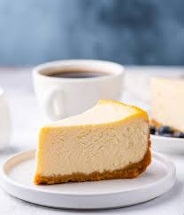

Cheesecake

Description
Cheesecake is a dessert made with a soft fresh cheese (typically cottage cheese, cream cheese, quark or ricotta), eggs, and sugar.
It may have a crust or base made from crushed cookies (or digestive biscuits), graham crackers, pastry, or sometimes sponge cake.
Ingredients
Steps
- Select a pie pan whose inside top dimension is at least 9", and whose height is at least 1 1/4". Preheat the oven to 350°F.
To make the crust: Stir together all of the crust ingredients, mixing until thoroughly combined.
Press the crumbs into the bottom and up the sides of the pie pan, making a thicker layer on the bottom than on the sides.
- To make the filling: Mix together the room-temperature cream cheese and sugar until smooth. Mix in the eggs and vanilla, again mixing until smooth.
To avoid beating too much air into the batter, use a mixer set at low-medium speed.
To avoid lumps, make sure the cream cheese is softened, and/or at room temperature. Set the pie pan onto a baking sheet, if desired; this makes it easier to transport in and out of the oven, and also protects the bottom of the crust from any potential scorching. Pour the filling into the crust.
- From there, it's just an assembly job. A cup of meat sauce, a layer of noodles, more sauce, followed by a layer of cheese.
Repeat until you have three layers and have used up all the ingredients.
- To bake the cheesecake: Place the cheesecake in the oven. Bake it for 20 minutes, then add a crust shield; or shield the crust with strips of aluminum foil. Bake for an additional 10 minutes (for a total of about 30 minutes). A digital thermometer inserted into the filling 1" from the edge should read between 165°F and 170°F; the filling won't look entirely set in the center.
Remove the cheesecake from the oven and set it on a rack to cool. Once the cake is cool, refrigerate it, covered, until you're ready to serve it.
Serve cheesecake in wedges, with fresh fruit if desired.